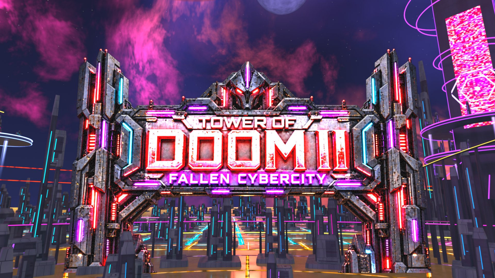
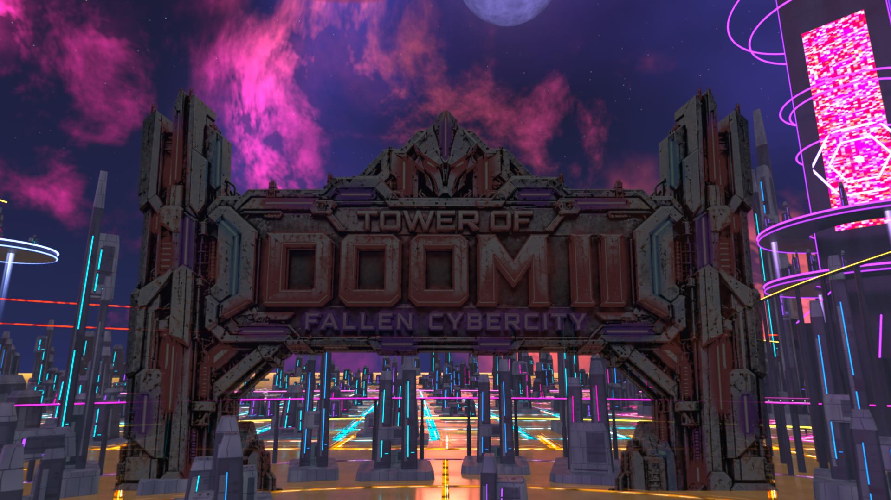
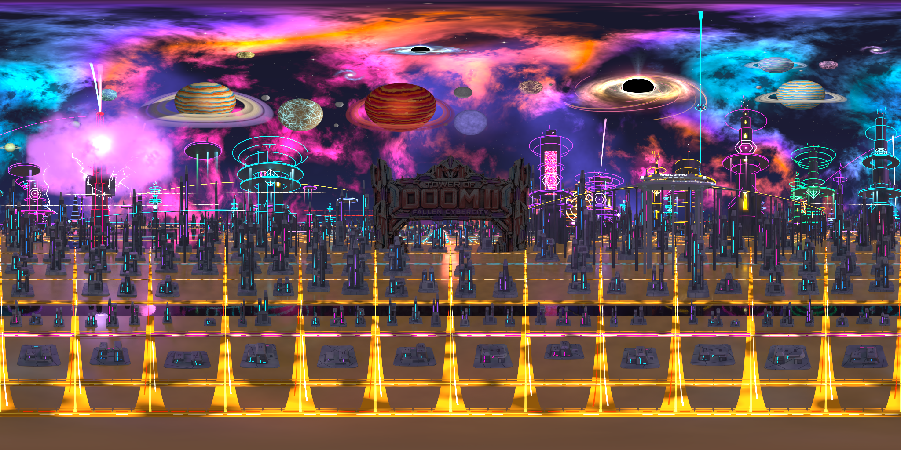

A shared cyber skyline, readable worlds
The near buildings set the material and architecture family for the ordinary skyline. Compare the distant city, title supports and celestial detail at matched camera angles.
Native sky build verified at 2026-09-30T11:26:52.221955. User visual playtest pending.
These are projections of the finished Blender HDR sky at the established display bracket. They are not game screenshots; BO3 bloom and exposure remain a user playtest.
The earlier sky had a permanently lit sign. The revised panorama intentionally contains the dull before-jump sign; after the crash a native card lights it. This title-state difference is separate from the city/material changes.
After reveal · native card over the dull sky (approximate Blender display)
Before jump · Blender preview

Whole panorama

Native build proof · Composition audit · Geometry check · Preserved baseline · Reproduction
Reopen the installed Blender preview with tools/sky_consistency/open_preview.ps1 to restore Rendered mode and scene lighting after file loading.
Gallery generated 2026-09-30T11:27:22.280467-04:00.